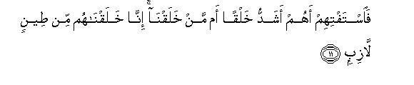
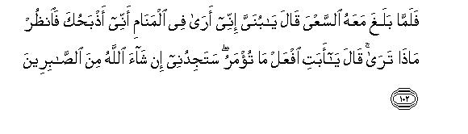
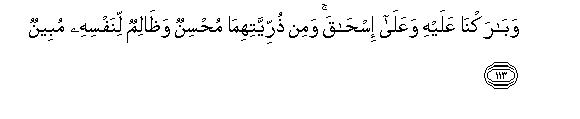
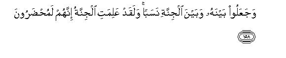

بسم الله الرحمن الرحيم
Sayyid Abul Ala Maududi - Tafhim al-Qur'an - The Meaning of the Qur'an
 37.
Surah As Saaffat (Those who set the ranks)
37.
Surah As Saaffat (Those who set the ranks)
The name is derived from the word was saaffat with which the Surah begins.
The subject matter and the style show that this Surah probably was sent down in the middle of the Makkan period, or perhaps in the last stage of the middle Makkan period. The style clearly indicates that antagonism is raging strong in the background and the Holy Prophet and his Companions are passing through very difficult and discouraging circumstances.
The disbelievers of Makkah have been severely warned for their attitude of mockery and derision with which they were responding to the Holy Prophet's message of Tauhid and the Hereafter and for their utter refusal to accept and acknowledge his claim to Prophethood. In the end, they have been plainly warned that the Prophet whom they are mocking and ridiculing will overwhelm them in spite of their power and self and they will find the army of Allah encamping in the very courtyards of their houses (vv. 171-179. This notice was given at a time when there appeared no chance whatever of the Holy Prophet's success and triumph. The Muslims (who have been called Allah's army in these verses) were being made the target of severe persecution. Three- fourth of their population had already emigrated and hardly 40 to 50 of the Companions were left with the Holy Prophet in Makkah who were experiencing all sorts of the excesses with utter helplessness. Under such circumstances, in view of the apparent conditions, no one could believe that the Holy Prophet and the handful of his ill equipped Companions would ultimately attain dominance. The people rather thought that the new movement would end and be buried in the ravines of Makkah. But hardly 15 to 16 years had passed when on the conquest of Makkah precisely the same thing happened of which the disbelievers had been forewarned.
Along with administering warnings, Allah in this Surah has done full justice also to the theme of inducement and instruction in a balanced way. Brief but impressive arguments have been given about the validity of the doctrines of Tauhid and the Hereafter. Criticism has been made of the creed of the mushrikin to show the absurdity of their beliefs; they have been informed of the evil consequences of their deviations, which have been contrasted with the splendid results of the faith and righteous acts. Then, in continuation of the same, Precedents from past history have been cited to show how Allah had been treating His Prophets and their followers : how He has been favoring His faithful servants and punishing their deniers and rejectors.
The most instructive of the historical narratives presented in this Surah is the important event of the pious life of the Prophet Abraham, who became ready to sacrifice his only son as soon as he received an inspiration from Allah. In this there was a lesson not only for the disbelieving Quraish, who waxed proud of their blood relationship with him, but also for the Muslims who had believed in Allah and His Messenger. By narrating this event they were told what is the essence and the real spirit of Islam, and how a true believer should be ready to sacrifice his all for the pleasure and approval of Allah after he has adopted it as his Faith and Creed.
The last verses of the Surah were not only a warning for the disbelievers but also a good news for the believers who were passing through highly unfavorable and discouraging conditions on account of their supporting and following the Holy Prophet. In these verses they were given the good news that they should not be disheartened at the hardships and difficulties they had to encounter in the beginning, for in the end they alone would attain dominance, and the standard bearers of falsehood, who appeared to be dominant at the time would be overwhelmed and vanquished at their hands. A few years later the turn the events took, proved that it was not an empty consolation but an inevitable reality of which they had been foretold in order to strengthen their hearts.

In the name of Allah, the Compassionate, the Merciful.

[1-5] By those who set themselves in ranks; then by those scold and curse, then by those who recite admonition.1 Your real Deity is but One.2 He Who is Lord of the earth and the heavens and of all that is between them, and Lord3 of all Easts.4
[6-10] We have adorned the lower heaven with the adornment of the stars5 and have secured it against every rebel satan.6 These satans cannot hear the words of the exalted ones; they are darted at and driven off from every side, and for them there is a perpetual torment. However, if some one snatches away something, a flashing flame follows him.7

[11-18] Now ask them: What is more difficult: their own creation or of those things which We have created?8 Of sticky clay We have created them.9 You marvel (at the wonders of Allah's power), but they are scoffing at it. When they are warned they do not take the warning. When they see a Sign they mock at it, and say, "This is plain magic.10 What! When we are dead and have become dust and bones, shall we be raised up to life? And also our forefathers of ancient times?" Say to them, "Yes, and you are helpless (against God).11


[19-32] There will only be a single shout and suddenly they will be seeing (all of which they are being warned) with their own eyes.12 Then they will say, "Woe to us! This is the Day of Requital." The same Day of Judgment which you used to deny.13 (It will be commanded): "Gather all the unjust people14 and their associates15 together, and those gods whom they used to worship instead of Allah16 then show them the way to Hell. And stop them for a while: they have to be questioned: “What is the matter? Why don't you help one another? Today, they are surrendering themselves (and others to God)”17 Then they will turn to each other for mutual reproaches. (The followers) will say (to their guides): "You used to come to us from the right side."18 They will reply, "Nay but it was yourselves who did not believe: we had no power over you: you yourselves were a rebellious people. Consequently, we have deserved the verdict of our Lord that we should taste the torment. So we led you astray for we ourselves had gone astray."19
[33-39] So, on that Day they shall all share the torment.20 Thus do We deal with the criminals. These were the people that when it was said to them, "There is no god but Allah," they were puffed up with pride and would say, "Should we give up our gods for the sake of a mad poet?" Whereas he had come with the Truth and had confirmed the Messengers.21 (Then it will be said to them :) "You shall have to taste the painful scourge, and your retribution will be strictly according to the deeds that you have been performing."

[40-46] But the chosen servants of Allah will remain safe (from this evil end). For them there is a known provision:22 tasteful things of all kinds23 and gardens of delight wherein they shall be lodged with honor. They will sit face to face on couches: cups filled from fountains24 of wine25 will be passed round to them,26 of crystal white drink, delicious for those who drink it.
[47-49] Neither will they be harmed physically thereby nor become drunk.27 And beside them there will be chaste women28 with beautiful eyes, restraining their looks,29 delicate as the thin skin hidden under the egg shell.30


[50-59] Then they will turn to one another to ask questions. One of them will say, "I had a friend in the world, who used to say, 'Are you also of those who affirm?31 What! when we are dead and have become dust and bones, shall we really be rewarded and punished?' Now, do you want to see where that man is?" Saying this as he will look down, he will see him in the depth of Hell. He will address him, saying, "By God! you had almost ruined me. But for the favor of my Lord, I also should have been among those who have been seized and brought here.32 Well! Are we not to die any other than our first death? Are we not to be punished?"33
[60-74] This indeed is the supreme success. For the like of this, then, should the workers work. Say, "Is this feast better or the zaqqum tree?34 We have made that tree a trial for the wicked people.35 It is a tree that grows out from the bottom of Hell. Its buds are like the heads of satans.36 The dwellers of Hell shall eat it and fill their bellies with it. Then, upon it, they will get boiling water to drink. Then, their return shall be to the same Fire of Hell.37 These are the people, who found their forefathers astray and they hastened in their footsteps, whereas many people before them had gone astray though We had sent warners among them. Now see what was the end of those who had been warned. Only such servants of Allah were able to avoid this evil end, whom Allah has chosen for Himself.38

[75-82] (Before this)39 Noah had called on Us.40 Just see how excellent Answerers (of the prayers) We were! We saved him and his household from the great distress41 and made his progeny to be the only survivors42 and left for him praise among posterity. Peace be upon Noah among the people of the world.43 Thus do We reward the righteous. He was indeed one of Our believing servants. Then We drowned the others.
[83-87] And Abraham was the one who followed the way of Noah. When he approached his Lord with a sound heart.44 When he said to his father and his people,45 "What are these things that you worship? Do you seek false gods instead of Allah? What do you think about the Lord of the worlds?"46
[88-98] Then47 he cast a glance at the stars48 and said, "I am sick."49 So they left him behind and went away.50 In their absence, he stole into the temple of their gods and said, "Why don't you eat?51 What is the matter that you do not even speak?" Then he fell upon them, smiting them with his right hand. (On their return) the people came to him running.52 He said, "Do you worship those that you have yourselves carved? whereas Allah has created you as well as those (things) which you make." They said to one another, "Prepare for him a bonfire and throw him into the blazing flames." They had designed a plan against him, but We defeated them in their plan.53


[99-113] Abraham said,54 "I shall go to my Lord.55 He will guide me. O my Lord! grant me a son who should be righteous."56 (In answer to this prayer) We gave him the good news of a gentle (clement) son.57 When the boy reached the age to work with him, (one day) Abraham said to him, "My son! I have dreamed that I am sacrificing you.58 Now tell me what you think of it."59 He said, "My dear father, do as you are being commanded.60 You will find me, if Allah so wills, of the patient." At last, when the two had submitted them selves (to Allah) and Abraham had flung his son down on his brow,61 and We called out,62 "O Abraham! You have indeed fulfilled your vision.63 Thus do We reward the righteous.64 This was indeed a manifest trial."65 And We ransomed his son for a great sacrifice,66 and left for him praise among posterity for ever. Peace is upon Abraham. Thus do We reward the righteous. Indeed he was one of Our believing servants; and We gave him the good news of Isaac, a Prophet among the righteous. And we blessed him as well as Isaac.67 Now among their offspring someone is righteous and someone clearly a sinner against his own self.68

[114-122] And We showed favor to Moses and Aaron: We delivered them and their people from a great distress.69 We helped them and so they became triumphant: We gave them a clear Book, and guided them to the Right Way, and left good words for them among posterity. Peace is on Moses and Aaron. Thus do We reward the righteous. Indeed they were among Our believing servants.
[123-132] And Elias also was one of the Messengers.70 Remember when he said to his people, "Do you not fear ? Do you invoke Ba'al71 and leave the Best of Creators, that Allah Who is your Lord and Lord of all your forefathers?" But they treated him as a liar, so they will certainly be presented for punishment, except for the true servants of God,72 and We left good words for Elias among posterity.73 Peace is upon Elias!74 Thus do We reward the righteous. Indeed he was one of Our believing servants.
[133-138] And Lot also was one of the Messengers. Remember when We rescued him and all his household, except for an old woman who was among those who remained behind.75 Then We destroyed the others completely. Now you pass by their ruins by day and by night.76 Have you then no sense?

[139-148] And indeed Jonah also was one of the Messengers.77 Remember when he fled to the laden vessel;78 then he took part in the casting of lots and lost. At last, the fish swallowed him, for he was blameworthy.79 Had he not been of those who glorify80 (Us)"he would have remained in the fish's belly till the Day of Resurrection.81 At last We cast him on a bare shore in a state of sickness,82 and caused a creeper83 to grow over him. Then We sent him to a hundred thousand people, or more.84 They believed in him and We let them live till an appointed time.85


[149-157] Just ask the people86 (whether it appeals to them) that their Lord should have daughters and they should have sons!87 Have We really created the angels females and they are eye-witnesses of it? Note it well: they, in fact, invent a falsehood when they say, "Allah has children." They are utter liars. Did Allah choose daughters for Himself instead of sons? What is the matter with you? How you judge? Will you not have sense? Or, if you have a clear authority for this, then bring your Book if you are truthful.88

[158-166] They have invented a blood-relationship between Allah and the angels,89 whereas the angels know full well that these people will be brought up as culprits. (And they say) "Allah is free from the things which the other people than His true servants attribute to Him. Therefore you and your gods cannot turn anyone from Allah, except him who shall burn in the blazing Fire of Hell.90 As for ourselves, each one of us has an appointed place,91 and we are the ranged servants and the glorifiers (of Allah)."

[167-173] Before this they used to say, "If we had the 'Admonition' which the earlier people had received, we would have been the chosen servants of Allah."92 But (when it did come) they denied it. Now, they will soon come to know (the consequences of this attitude). We have already promised Our servants whom We sent that they would certainly be helped, and Our army alone would be triumphant.93
[174-179] Therefore, O Prophet, leave them for a while to themselves and watch (them); soon they will see it for themselves.94 Are they clamoring for our torment? The day when it descends in their courtyards, will be a dreadful day for those who have been warned. So leave them alone for a while and watch; soon they will themselves see.
[180-182] Glorified is your Lord, Lord of Honour, (and free) from all that they attribute to Him., and peace on the Messengers, and all praise is only for Allah, Lord of the Universe.
1The majority of the commentators are agreed that All these three groups imply the groups of the angels, and the same explanation of it has been reported from 'Abdullah bin Mas'ud, Ibn `Abbas, Qatadah, Masruq Said bin Jubair, 'Ikrimah, Mujahid, Suddi, Ibn Zaid and Rabi' bin Anas. Some commentators have given other commentaries also, but this commentary is more in keeping with the context. The words "range themselves in ranks" refer to the fact that all the angels who arc administering the affairs of the universe, are the humble servants of Allah, and are ever ready to carry out any service and implement any command of His. This theme -has been further repeated in verse 165 below, where the angels say with regard to themselves: "We are the ranged servants (of Allah).'
As for "scolding and cursing", some commentators think that it refers to those angels who drive the clouds and arrange the rainfall. Although this meaning is not incorrect either, the meaning which is more relevant to the following context is that among these angels there is also a group of those, who scold and curse the disobedient people and the culprits, and this scolding and cursing is not merely verbal but it rains on human beings in the form of natural disasters and calamities.
"To recite admonition" implies that among these angels there are also those, who perform the service of admonition in order to draw the people's attention .to the Truth. This they do by bringing about natural calamities from which the needful take heed, and by bringing down the teachings to the Prophets, and in the form of revelations with which the pious men are blessed through them.
2This is the Truth to impress which an oath has been taken by the angels bearing the above-mentioned qualities. In other words, what is meant to be said is: "The whole system of the universe which is functioning in the service of Allah, and all those manifestations of this universe which bring the evil consequences of deviation from the service of Allah before men, testify that the "Deity" of men is One and only One."
The word "Ilah" applies to two meanings:
(1) The deity who is actually being served and worshiped; and
(2) the Deity Who, in reality, is worthy of being served and worshiped.
Here, the word "Ilah"has been used in the second meaning, for, as far as the first meaning is concerned, men have adopted many other deities. That is why we have translated "Ilah"as the "real Deity".
3The Truth that has been conveyed in these verses is: "The Master and Ruler of the Universe is the real Deity of men: He alone can be, and should be the Deity. It would be utterly irrational that the Rabb (i.e.. Master, Ruler, Guardian and Sustainer) of the man should be one but his Ilah (deity) another. The basic reason for worship is that man should naturally bow down before and acknowledge the superiority of him who can bring him harm and good, who can fulfill his needs and requirements, who can make or mar his destiny and has power over his life and survival itself. If man understands this he will automatically understand that to worship the one who has no power and not to worship Him Who has All the powers arc both against reason and nature. The One Who alone is worthy of worship is He Who possesses the powers. As far as the powerless beings are concerned, they are neither worthy of worship, nor is it in any way profitable to worship and pray to them, for it is not in their power to take any action whatever on man's petitions and prayers. To bow before them humbly and to petition them would be as foolish and meaningless an act as to bow before and petition another one who has himself gone before a ruler to make obeisance and submit his petitions.
4The sun does not always rise at the same point but at a different point every day. Moreover, it does not rise at one and the same time for the whole world but rises at different times for the different parts of the earth. That is why the plural "Mashariq" (Easts) has been used to indicate the different points at which the sun rises according to the season of the year. The corresponding word “Magharib” (Wests) has not been used because Mashariq itself points to Magharib However, in Surah Al-Ma'arij, the word magharib also has been used along with mashariq: Rabb-al-mashariqi wal-magharib.
5"Lower heaven" : The nearer heaven which can be seen with the naked eye, without the help of a telescope. The worlds beyond which can be seen through the telescopes of different powers, and the worlds which have not so far been observed through any moans, are the distant heavens. In this connection, one should also note that "sama " is not something definite and determined, but man generally has been using this word and its other synonyms for the heavens since the earliest times.
6That is, "Heaven is not merely empty space so that anyone who likes may enter it, but it has been fortified strongly, and its different regions have been bounded by such strong barriers that it is impossible for any rebel satan to exceed them. Every star and planet in the universe has its own circle and sphere escaping from which is as difficult as entering it. With the naked eye one can only see empty space, but, in reality, there are countless regions in space which have been even more strongly fortified and protected than they could be by steel walls. One can imagine and estimate the strength of these barriers by the difficulties man is experiencing in the way of reaching the moon, which is our nearest neighbor in space. Similar difficulties prevent the other creation of the earth, the jinns, from ascending towards the heavens.
7To understand this one should keep in view the fact that in the time of the Holy Prophet, soothsaying was in great vogue in Arabia. The soothsayers used to make predictions, give news of the unseen, tell the whereabouts of the lost properties and articles, and the people used to visit them to know the events of their past and future lives. These soothsayers claimed that they had some jinns and satans under their control, who brought them all sorts of news. In this environment when the Holy Prophet was appointed to Prophethood, and he began to recite the verses of the Qur'an, which described the past history and contained news of the future, and also stated that an angel brought him these verses, his opponents immediately branded him a soothsayer and started telling others that, like the other soothsayers, he too was associated with a satan, who brought him news from the heavens, which he presented as revelations from Allah. To refute this accusation, Allah says: "The satans have no access to heaven. They have no power to hear the conversations of the angels and bring its news for others; if by chance a little of it enters the ear of a satan, and he tries to bring it down, he is followed by a flashing flame." In other words, it means: "The grand system of the universe, which is functioning under the agency of the angels has been firmly guarded and secured against every interference of the satans. Not to speak of interfering in it, they do not even have the power to obtain any kind of information about it. " (For further explanation, see AI-Hijr: 17-18 and the E.N's thereof).
8This is an answer to the suspicions of the disbelievers of Makkah, which they presented about the Hereafter. They thought that the Hereafter was not possible, for it is impossible that the dead men should be recreated. In answer to it, Allah presents arguments for the possibility of the Hereafter and asks: "If you think that the recreation of the dead men is a very difficult task which We do not have the power to accomplish, do you think it is easy to create the earth and the heavens and the countless things that they contain? Why don't you use your common sense ? Do you think that God for Whom it was not at all difficult to create this great Universe and Who has created you in the first instance, will not have the power to create you once again ?"
9That is, "Man is not a difficult thing to make. He has been created from clay, and can again be created from the same clay." "Created man of sticky clay" means that the first man was created directly from the clay and then his race was perpetuated by means of the sperm-drop. It also means that every man has been 'created from the sticky clay, for the whole substance of man's body is obtained from the earth. The sperm-drop of which he is created, is a product of the food, and all the substances which make up his physical being, from the time he is conceived till his death, are also supplied by the food. The source of the food, whether animal flesh or vegetable, is ultimately the same earth which, in combination with water produces corn and vegetables and fruit to become food for man, and nourish the animals, which supply milk and flesh for the use of man.
Thus, the basis of the argument is: Man could not be living today if the earth and clay had not become the source of life for him. And if it is possible today to create life in it, as your own existence is a clear and definite pointer to this possibility, why should it be impossible to bring about your re-creation from the same earth tomorrow ?
10That is, "This person is talking of the world of magic in which the dead will rise, and will be produced before a court and sent to Heaven and Hell" or, it may also mean: "This person is talking like a madman. What he talks is a clear proof that somebody has worked magic on him; otherwise a sensible person could not talk such things.
11That is, "Allah can make of you whatever He likes. When He willed, you came into being forthwith; when He wills, you will die at one Command by Him; and then whenever He wills, His one Command will raise you back to lift. "
12That is, "When the time comes for this, it will not be difficult to reestablish the whole world. Just a single shout will be enough to make the people to wake up. Here, the word "shout" or "cry" is very meaningful. It depicts the Resurrection as though the people who had died since the beginning of the creation till the last Day, were lying asleep, and a sudden command to them to "wake up" will cause them to rise up all at once."
13It may be that this is said by the believers, or by the angels; or it may be, as it were, the common expression of the conditions prevailing in the plain of Resurrection or it may as well be another reaction of the people themselves. That is, they may be saying in their hearts. "In the world, you lived in a way as if no Day of Judgment would ever come. Now you have come to your doom! This is the same Day that you used to deny ! "
14"The unjust people" does not only imply those who committed injustices in the world, but as a Qur'anic term Zalim implies every such person, who might have adopted the way of rebellion and disobedience against Allah. "
15The word "azwaj"in the original might also imply their wives, who were their associates in this rebellion, and also all those people who were rebellious and disobedient like them. Moreover it may also mean that the culprits of different categories will be gathered together in separate groups.
16"Gods" here implies two kinds of the gods:
(1) Those men and satans who themselves desired that the people should worship them instead of Allah; and
(2) those idols and trees and stones, etc., which have actually been worshiped in the world.
The first kind of the gods will be included among the culprits themselves and will be led to Hell for punishment; the other kind of them will be thrown into Hell along with their worshipers so that they constantly feel ashamed of and continue to regret their follies. Besides, there is also a third kind of the gods, who have been worshiped in the world, but without their own consent and knowledge; they rather forbade the people to worship anyone but Allah, e.g. the angels, prophets and saints. Obviously, this kind of the gods will not be included among the gods who will be driven to Hell along with their worshipers.
17The first sentence will be addressed to the culprits, and the second to the common spectators, who will be watching the scene of the culprits' departure for Hell. This sentence itself tells of the general conditions at the time. It tells how the haughty and stubborn culprits of the world will be moving towards Hell meekly and without showing any resistance. Somewhere some kind will be seen being pushed about, and no one from among his courtiers will come forward to rescue "his majesty"; somewhere some conqueror of the world and some dictator will be moving away in humiliation and disgrace, and his brave army itself will deliver him for the punishment; somewhere some saint or some holy father will be seen being thrown into Hell, and no one of his disciples will bother to save him froth disgrace; somewhere some leader will be trudging helplessly towards Hell, and those who used to glorify and applaud him in the world, will turn away their eyes from him. So much so that the (over who was ever prepared to sacrifice everything for the beloved in the world, will feel least concerned to save him from his plight. By depicting this scene Allah wants to impress how the relationships of man with man, which are based on rebellion against Allah in the world, will break in the Hereafter, and how the pride of those who are involved in arrogance and conceit here, will be ruined.
18The word yamin in Arabic is used for several meanings. It may mean use of the force, or well-wishing, or swearing of an oath. Accordingly, the verse would mean:
(1) "You compelled us into following error and deviation"; or
(2) "you deceived us by posing as our well-wishers"; or
(3) "you swore oaths to satisfy us that what you were presenting was the very truth."
19For explanation, see E.N's 51, 52, 53 of Surah Saba.
20That is, the followers as well as the guides, misleaders as well as the misled, All shall suffer the same torment. Neither will the followers' excuse be heeded that they did not go astray but had been led astray, nor the guides' excuse accepted that the people themselves were not desirous of following the right way.
21Confirmation of the Messengers has three meanings and all the three are implied here:
(1) That he had not opposed any former Messenger so that the believers of that Messenger could have a rational ground of prejudice against him; he had rather confirmed all the former Messengers sent by God;
(2) that he had not brought any new or novel thing, but he had presented the same that the former Messengers of God had been presenting from the very beginning; and
(3) that he truly fulfilled and corresponded to the predictions that the former Messengers had made concerning him.
22"A known provision" : A provision All of whose characteristics have been made known to them, which they are sure to receive, about which they have also the full satisfaction that they will continue to receive it for ever, and about which there is no apprehension that they may or may not get it at some time.
23In this there is a subtle allusion to this also that in Paradise food will be provided not to serve as food but for pleasure and delight. That is, the food there will not be meant to replenish the bodily deficiencies through diet, for no deficiency whatever will occur in the body in that eternal life, nor will man have appetite, for appetite is caused by the process of assimilation in the body, nor will the body demand food for its survival. That is why the word fawakih has been used for the different kinds of food in Paradise, which contains the sense of taste and pleasure more than that of nutrition.
24That is, `It will not be the kind of wine that is extracted from rotten fruit and corn in the world, but it will flow naturally from fountains like canals. In Surah Muhammad, the same thing has been described more clearly, thus: ........and canals will be flowing in it of wine which will be delightful for the drinkers." (v. 15)
25Here the word ka `s (cup) only has been used and there is no mention of the wine. But in Arabic the use of ka's always implies wine. The cup which contains milk or water, instead of wine, or is empty, is not called ka's. The word ka's is used for a cup only when it contains wine.
26Here it has not been mentioned as to who will take these cups of wine round to the dwellers of Paradise. This has been stated at other places: `And there will go round to them young boys, exclusively appointed for their service, who will be as lovely as well-guarded pearls." (At-Tur :24). `They will be attended by brisk-moving boys who will for ever remain boys. If you saw them, you would think they were pearls, scattered." (Ad-Dahr: 19). Then, its further details are found in the traditions related by Hadrat Anas and Hadrat Samurah bin Jundub from the Holy Prophet, according to which: `The children of the mushrikin will be attendants of the dwellers of Paradise." (Abu Da`ud Tayalisi, Tabarani, Bazzar). Though these traditions are weak as regards their links of transmitters, there are several other Ahadith which mean that children who died young, before attaining maturity, will go to Paradise. Ahadith also show that the children whose parents are blessed with Paradise, will live with them so as to be a comfort of the eyes for them. This leaves behind those children whose parents will not go to Paradise. Thus, with regard to them, it seems reasonable that they will be made the attendants of the dwellers of Paradise. (For a detailed discussion of this, see Fath ul-Bari and 'Umdat ul-Qari: Kitab ul-Jana'iz, Bab; Maqila fi aulad il -mushrikin; Rasa 'il-o-Masa'il, vol. III, pp. 177-187).
27That is, the wide of Paradise will be free from both the evils which are found in the wine of the world. The wine of the world, first of All, afflicts man with its stink; then it embitters his taste, upsets his stomach, affects his mind and causes giddiness; then it affects the liver and spoils the health generally. Then, when the intoxication is gone, it leaves behind other ill-effects on the body. Its other evil is that man gets drunk with it, talks nonsense and brawls. This is how the wine affects man's mind and reason. Man suffers both these evil effects of the wine only for the sake of delight and pleasure. Allah says that the wine of Paradise will certainly afford and give full pleasure and delight, but it will be free from the kinds of the evils that go with the worldly wine.
28Probably these will be the girls who died before attaining the age of discretion in the world, and whose parents did not deserve to enter Paradise. This can be said on the basis of analogy that just as the boys similarly placed will be appointed for the service of the dwellers of Paradise, and they will ever remain hoes, so will the girls be made the houris and they will ever remain young and beautiful. The correct knowledge, however, is with Allah.
29"Restraining their looks": Restraining their looks from everyone except their husbands.
30The words of the Text actually mean this: "As if they were the hidden or well preserved eggs." The commentators have given different interpretations of these words, but the correct commentary is the one which Hadrat Umm Salamah has related from the Holy Prophet. She says that when she asked the meaning of this verse from the Holy Prophet, he said: "Their delicacy and elegance and tenderness will be like the thin skin which is there between the shell of the egg and its fleshy part." (Ibn Jarir).
31That is, "Were you also one of those credulous people who put their faith in an irrational and impossible thing like life-after-death ?"
32This shows how powerful will be man's hearing, seeing and speaking powers in the Hereafter. Sitting in Paradise he bends his head a little and is able to see a person, who is undergoing torment thousands of miles away in Hell, without the agency of a television set. Then, they not only just see each other, but also commune with each other directly without the medium of the telephone or radio and they speak and hear each other over vast distances.
33The style clearly shows that while speaking to his friend in Hell, the dweller of Paradise suddenly starts talking to himself. He speaks these three sentences in a way as if he found himself in a state much better than that he ever expected and imagined for himself, and now being beside himself with wonder and joy he is engaged in a sort of soliloquy. In such a state the speaker does not speak to an addressee, nor the questions he asks are meant to find out something from somebody, but in this state the man's own feelings find expression through his tongue. The dweller of Paradise, while speaking to the dweller of Hell, suddenly starts feeling how he has been favored by good fortune: now there is neither death nor any torment: all troubles and distresses have come to an end and he has been blessed with immortality. Under this very feeling he exclaims: "Well arc we not to die any other than our first death ? Are we not to be punished?"
34Zaqqum is a tree of the cactus species found in Tihamah. It is bitter in taste, obnoxious in smell and sheds a milk like juice when cut or broken.
35That is, "On hearing this the disbelievers get a new opportunity to taunt the Qur'an and mock the Holy Prophet. They ridicule it saying, `Listen another strange thing: a tree will grow in the blazing fire of Hell'!"
36Nobody should have the misunderstanding that since no one has seen the head of Satan, it was no use likening the buds of zaqqum to it. This is, in fact, an imaginative kind of the simile, and is employed in the literature of every language. For example, in order to give an idea of the rare beauty of a woman, it is said she is a fairy, and in order to describe her ugliness, it is said that she is a hag or a demon. Likewise, a pious-looking person is described as an angel and a dreadful-looking person as a devil.
37This shows that when the dwellers of Hell will be in distress due to hunger and thirst, they will be driven to the side where there would be the zaqqum trees and the springs of boiling water. When they will have eaten and drunk, they will be brought back to Hell.
38That is, they never used their own common sense to sec whether the way their forefathers had been following was right or wrong; they just blindly adopted the way that they found others following.
39This theme is related with the preceding sentences. A study of them shows why these stories are being narrated here.
40This refers to the prayer that the Prophet Noah had at last made to Allah Almighty, being disappointed with his people, after having preached the true Faith to them for a very long period of time, without much success. This prayer has been related in Surah All-Qamar, thus: "He called out to his Lord, saying: I am overcome: take now Thy vengeance." (v. 10).
41That is, from the severe distress that was being caused to him on account of the continuous opposition and antagonism of a wicked and cruel people. This also contains a subtle allusion that just as the Prophet Noah and his companions were saved from the great distress, so also shall We ultimately save the Prophet Muhammad (upon whom be Allah's peace) and his Companions from the great distress that is being caused to them by the people of Makkah.
42This can have two meanings:
(1) That the progeny of the people who were opposing the Prophet Noah was made extinct and the Prophet Noah's progeny alone was allowed to survive; and
(2) that the whole human race was made extinct, and only the Prophet Noah's progeny was allowed to inhabit the earth after that. The commentators generally have adopted this second meaning, but the words of the Qur'an are not explicit in this regard and no one knows the reality except Allah.
43That is there is none in the world today, who would talk coil of the Prophet Noah. After the Flood till today the world has been praising and speaking well of him for thousands of years.
44"Approached his Lord": Turned to his Lord sincerely and exclusively; "with a sound heart": with a heart that was free from all kinds of moral evils and weaknesses of faith, free from every trace of unbelief and shirk, doubt and suspicion, from every feeling of disobedience and rebellion, from every crookedness, confusion and complexity, and free from every evil inclination and desire, and a heart that neither cherished any malice and jealousy and ill-will against anyone, nor had any evil intention.
45For further details of this story of the Prophet Abraham, please see Surah Al-An'am: 72-90; Maryam: 41-60; AI-Anbiya: 51-75; Ash-Shu'ara; 69-89; Al-'Ankabut: 16-17, and the E.N's thereof.
46That is, "Why have you formed such a wrong view of Allah? Do you think that the gods that you have yourselves carved out from wood and stone can be like Him, or can be His associates in his attributes and rights? And are you involved in the misunderstanding that you will somehow manage to escape His punishment after you have indulged in such blasphemy ?
47The reference is to a particular incident the details of which have been given in Surah Al-Anbiya': 71-73 and Al-`Ankabut: 16-27 above.
48Ibn Abi Hatim has cited a saying of the famous commentator Qatadah, an immediate follower of the Companions, to the effect that the Arabic idiomatic expression, cast a glance at the stars," means that he pondered deeply, or that he started thinking seriously. 'Allama Ibn Kathir has preferred this same view, and this is also supported by the common observation: when a person is confronted by a problem that needs serious consideration, he looks upward or to the sky for a while, and then makes a reply, after due consideration.
49This is one of those three things concerning which it is said that the Prophet Abraham had told three lies in his life, whereas it should be ascertained before declaring it a lie, or anything contrary to fact, whether the Prophet Abraham at that time was not suffering from any illness, and therefore, he had trade this excuse only as a pretense. If there is no proof, there is no reason why it should be regarded as a lie. For a detailed discussion, please refer to E.N. 60 of Surah Al-Anbiya` and Rasa 'il-o-Masa'il, vol. II, pp. 35 to 39.
50This sentence by itself shows the real state of the affairs. It appears that the people might be going to sane fair of theirs. The family of the Prophet Abraham might have asked him also to accompany them. He might have excused himself, saying that he was indisposed, and therefore, could not go. Had it been something contrary to fact, the people of the house would have said: "You look perfectly normal: you are making a false excuse. But when they accepted his excuse and left him behind, it clearly shows that the Prophet Abraham must at that time be suffering from cough and cold or sane other such visible illness on account of which the people of the house agreed to leave him behind.
51This shows that there were different kinds of food placed before the idols in the temple.
52Here the story has been told in brief. According to the details given in Surah Al-Anbiya`, when they returned and found all their idols broken to pieces in the temple, they started making investigations. Some people said that a young man, called Abraham, had been talking such and such things against idol-worship. At this the multitude demanded that he should be immediately seized and brought before them. Therefore, a group of the people went running to him and brought him before the multitude.
53The words in Surah Al-Anbiya`: 69 are to the effect: "We commanded: O fire, be cool and become safe for Abraham," and in Surah AI'Ankbut: 24, it has been said: "Then Allah saved him from the fire." This proves that those people had actually thrown the Prophet Abraham into the fire, and then Allah had rescued him from it safe and sound. The words of the verse, "They had designed a plan against him, but We defeated them in their plan," cannot be taken to mean that they had only intended to throw the Prophet Abraham into the fire but could not carry their plan into effect; but when these words are read with the verses cited above, the meaning becomes plain that they had wanted to kill him by casting him into the fire but could not do so, and the Prophet Abraham's miraculous escape proved his superiority and the polytheists were humbled by Allah. The real object of relating this incident is to warn the people of the Quraish to this effect: "The way that you have adopted is not the way of the Prophet Abraham, whose descendants you claim yourselves to be, but his way is the one being presented by the Prophet Muhammad (upon whom be Allah's peace and blessings). Now, if you plot against him in order to defeat him and frustrate his mission, as the people of the Prophet Abraham had done against him, you alone will be defeated in the end, because you cannot defeat Muhammad (upon whom be Allah's peace).
54The Prophet Abraham said these words on his departure after he had been delivered safe from the fire and had decided to leave the country.
55It mean: "I am leaving my home and country for the sake of Allah, for my people have turned hostile to me only because of my turning to Him exclusively; otherwise there was no worldly dispute between them and me because of which I might have had to Leave my country. Moreover. I have no place of refuge in the world, to which I may turn. I am leaving my home with full faith and trust only in Allah: I shall go wherever He leads me. "
56This prayer by itself shows that the Prophet Abraham at that time was childless. From the details given at other places in the Qur'an, it becomes clear that he had left his country with only one wife and one nephew (the Prophet Lot). Therefore, he naturally desired that Allah should bless him with a righteous child, who could be a source of comfort and consolation for him in a foreign land.
57From this one should not understand that this good news was given him immediately following his prayer. In the Qur'an itself, at another place, this saying of the Prophet Abraham has been related: "All praise be to Allah Who has given me sons like Ishmael and Isaac in my old age." (Ibrahim: 39). This proves that there was an interval of many years between the prayer and this good news. The Bible says that at the birth of the Prophet Ishmael, the Prophet Abraham was 86 years old (Gen. 16: 16) and at the birth of the Prophet Isaac a hundred years. (Gen. 21: 5).
58One should note that the Prophet Abraham had dreamed that he was sacrificing his son and not that he had sacrificed him. Although at that time he understood the dream to mean that he should sacrifice his son and on that very basis, he became ready to sacrifice him, with a cool mind, yet the fine point that Allah had in view in making him see the dream has been explained by Himself in verse 105 below.
59The object of asking this of the son was not that he would carry out Allah's Command only if he agreed, otherwise not, but the Prophet Abraham, in fact, wanted to find out how righteous, in actual reality, was his child for whom he had prayed to Allah. If the son himself was found to be ready to lay down his life for the sake of Allah's approval and pleasure, it would mean that the prayer had been fully granted, and the son was not his offspring in the natural way only but was morally and spiritually also a true son.
60The words clearly tell that the son had not taken the dream of his Prophet father to be a mere dream but a Command from Allah. Had it not been a Command actually, it was necessary that Allah should have explicitly or implicitly stated that the son of Abraham had mistaken it for a command. But the whole context is without any such allusion. On this very basis, there is the Islamic belief that the dream of the Prophets is never a mere dream it is also a kind of Revelation. Obviously, if a thing, which could become such a fundamental principle in the Divine Shari'ah, had not been based on reality, but had been a mere misunderstanding, it was not possible that Allah should not have refuted it. It is impossible for the one who believes the Qur'an to be Allah's Word, to accept That such an error and omission could emanate from Allah also.
61That is, "The Prophet Abraham did not make his son lit flat on his back but made him lie prostrate lest while slaughtering him the sight of his face should arouse compassion and lout and make him shaky. Therefore, he wanted to use the knife from under the throat" .
62One section of the grammarians says that here "and" has been use to mean "then"; thus, the sentence would be: "When the two had submitted themselves (to Allah) and Abraham had flung his son down on his brow, then We called out. . . " But another section of them says that here the answer to the word "when" has been omitted and left for the listener to fill; for it was better w leave such an indescribable thing to the imagination instead of expressing it in words. When Allah might have seen that the old father who had got a son after long earnest prayers, has become ready to sacrifice him only for His pleasure and approval; and the son also had became ready to get slaughtered, His infinite Mercy might have been aroused at the sight, and the Master might have felt great love for the father and son. All this can only be imagined. No words would ever describe the scene adequately.
63That is, "We did not make you see in the dream that you had actually slaughtered your son and he had died, but that you were slaughtering him. That Vision you have fulfilled. Now, it is not Our will to take the life of your child: the actual object of the vision has been fulfilled by your submission and preparation to sacrifice him for Our sake."
64That is, "We do not subject the people who adopt the righteous way to trials in order to involve them in trouble and distress and affliction just for the sake of it, but these trials are meant to bring out their excellencies and to exalt them to high ranks, and then We deliver them also safe and sound from the dilemma in which We place them for the sake of the trial. Thus, your willingness and preparation to sacrifice yow son is enough to entitle you to be exalted to the rank that could be attained only by the one who would actually have slaughtered his son for Our approval and pleasure. Thus, We have saved the life of yow child as well as exalted you to this high rank. "
65That is, "The object was not to get yow son slaughtered through you but to test you to see that you did not hold anything of the world dearer than Us.
66"A great sacrifice" : A ram, as mentioned in the Bible and the Islamic traditions, that Allah's angel presented at the time before the Prophet Abraham, so that he should sacrifice it instead of his son. This has been called "a great sacrifice" because it was to serve as a ransom from a faithful servant like Abraham for a patient and obedient son like Ishmael, and Allah made it a means of fulfilling the intention of an unprecedented sacrifice. Another reason for calling it "a great" sacrifice is that Allah made it a tradition till the Day of Resurrection that all the believers should offer animal sacrifice on the same date in the entire world so as to keep fresh the memory of the great and unique event signifying faithfulness and devotion."
67Here, the question arises: Who was the son whom the Prophet Abraham had got ready to offer as a sacrifice, and who had willingly offered himself to be slaughtered as a sacrifice? The first answer to this question is given by the Bible; and it is this:
"And it came to pass after these things, that God did tempt Abraham, and said unto him, Abraham: . . . Take now thy son thine only son Isaac, whom thou lovest, and get thee into the land of Moriah; and offer him there for a burnt offering upon one of the mountains which I will tell thee of." (Gen. 22: 1-2).
In this statement, on the one hand, it is being said that Allah had asked for the offering of the Prophet Isaac, and on the other, that he was Abraham's only son, whereas the Bible itself, at other places, conclusively states that the Prophet Isaac was. not the only son of the Prophet Abraham.Consider the following statements of the Bible:
"Now Sarai, Abram's wife bore him no children: and she had an handmaid, an Egyptian, whose name was Hagar. And Sarai said unto Abraham, Behold now, the Lord hath restrained me from bearing: I pray thee, go in unto my maid; it may be that I may obtain children by her. And Abraham hearkened to the voice of Sarai. And Sarai Abraham's wife took Hagar her maid the Egyptian, after Abraham had dwelt ten years in the land of Canaan, and gave her husband Abram to be his wife. And he went in unto Hagar, and she conceived." (Gen .16: 1-4)
"And the angel of the Lord said unto her, Behold thou art with child, and shalt bear a son, and shalt call his name Ishmael." (16: 11)
"And Abraham was fourscore and six years old, when Hagar bore Ishmael to Abraham." (16: 16).
"And God said unto Abraham, `As for Sarai thy wife, ..... I will bless her and give thee a son also of her: . . . . . and thou shalt call his name Isaac . . .. . . which Sarah shall bear unto thee at this set time in the next year And Abraham took Ishmael his son and ......every male among the men of Abraham's house; and . .. . . circumcised the flesh of their foreskin in the selfsame day, as God had said unto him. And Abraham was ninety years old and nine, when he was circumcised in the flesh of his foreskin. And Ishmael his son was thirteen years old, when he was circumcised in the flesh of his foreskin. " (Gen. 17: 15-25).
"And Abraham was an hundred years old, when his son Isaac was born unto him. " (Gen. 21: 5).
This brings out the contradictions of the Bible. It is evident that for 14 years the Prophet Ishmael was the only son of the Prophet Abraham. Now if the offering had been asked of the only son, it was not of Isaac but of Ishmael, for he alone was the only son; and if the offering of Isaac had been asked, it would be wrong to say that the offering of the only son had been asked.
Now let us consider the Islamic traditions, and they contain great differences. According to traditions cited by the commentators from the Companions and their immediate followers, one group of them is of the opinion that the son was the Prophet Isaac, and this group contains the following names:
Hadrat `Umar, `Hadrat `Ali, `Hadrat `Abdullah bin Mas'ud, Hadrat `Abbas bin `Abdul Muttalib, Hadrat `Abdullah bin `Abbas, Hadrat Abu Hurairah, Qatadah, `Ikrimah, Hasan Basri, Said bin Jubair, Mujahid, Sha`bi, Masruq, Makhul, Zuhri, `Ata, Muqatil, Suddi, Ka'b Ahbar, Zaid bin Aslam, and others.
The other group says that it was the Prophet Ishmael, and this group contains the names of the following authorities:
Hadrat Abu Bakr, Hadrat 'Ali, Hadrat `Abdullah bin `Umar, Hadrat 'Abdullah bin 'Abbas, Hadrat Abu Hurairah, Hadrat Mu'awiyah, `Ikrimah, Mujahid, Yusuf bin Mahran, Hasan Basri, Muhammad bin Ka`b al-Qurzi, Sha`bi, Said bin al-Musayyab, Dahhak, Muhammad bin 'Ali bin Husain (Muhammad alBaqir), Rabi` bin Anas, Ahmed bin Hanbal, and others.
When compared, the two lists will be seen to contain several common names: this is due to the reason that from the same person two different views have been reported. For example, from Hadrat 'Abdullah bin `Abbas, `Ikrimiah has related the saying that the son was the Prophet Isaac, but from him again `Ata' bin Abi Rabah relates: "The Jews claim that it was Isaac, but the Jews tell a tie. " Likewise. from Hadrat Hasan Basri, one tradition is to the effect that the Prophet Isaac was the son meant to be made the offering, but `Umar bin `Ubaid says that Hasan Basri had no doubt regarding that the son whom the Prophet Abraham had been commanded to offer as a sacrifice was the Prophet Ishmael (peace be upon him).
This diversity of tradition has resulted in the diversity of opinion among the scholars of Islam. Some of them e.g. Ibn Jarir and Qadi `Iyad, have expressed the firm opinion that the son was the Prophet Isaac. Others, like Ibn Kathir have given the verdict that it were the Prophet Ishmael. There ware others who are un-certain and wavering, e.g. Jalaluddin Suyuti. However, a deep inquiry into the question establishes the fact that the son intended to be offered as a sacrifice was the Prophet Ishmael. The following are the arguments:
(1) As stated by the Qur'an above, at the time of his emigration from the country, the Prophet Abraham had prayed for a righteous son and in answer to it, Allah had given him the good news of a clement boy. The context shows that this prayer was made at a time when he was childless, and the boy whose good news was given was his first-born child. Then, this also becomes obvious froth the Qur'anic story that when the child grew up to boyhood, he was inspired to offer him as an offering. Now, it is established beyond any doubt that the Prophet Abraham's first-born son was the Prophet Ishmael and not the Prophet Isaac. The Qur'an itself has stated the order between the two sons, thus: "All praise be to Allah Who has given me sons like Ishmael and Isaac in my old age." (Ibrahim: 39).
(2) The words used in the Qur'an with regard to the Prophet Isaac while giving the good news of his birth are: "And they gave him the good news of the birth of a son, possessing knowledge, ('alim). " (AdhDhariyat: 28 "Do not be afraid: we give you the good news of a son, possessing knowledge." (AI-Hijr: 53). But the son, the good news of whose birth has been given here; has been called a clement (halim) son. This shows that the two sons had distinctive qualities, and the offering had been asked of the clement son and not of the son possessing knowledge.
(3) Along with giving the good news of the birth of the Prophet Isaac in the Qur'an, the good news of the birth of a grandson like Jacob was also given: 'Then We gave her the good news of Isaac, and after Isaac of Jacob." (Hud: 71). Now obviously, if about the son along with the news of whose birth the news of a worthy son to be born to him had also been given, the Prophet Abraham was shown a vision that he was sacrificing him, he would never have understood that he was being inspired to offer that very son as an offering. 'Allama Ibn Jarir contends that the Prophet Abraham might have been shown this vision at a time when Jacob had already been born to the Prophet Isaac. But this is, in. fact, a very weak reply to the argument. The Qur'an says: 'When the boy became able to work with his father," then he was shown the vision Anyone who reads these words with an unbiased mind will have the image of an 8 to 10 years lad beforc him. No one can imagine that these words had been used about a young man having children.
(4) Allah, at the end of the story, says: "We gave him the good news of Isaac, a Prophet among the righteous." This clearly shows that it was not the same son, whom he had been inspired to offer as a sacrifice; but before this the good news of some other son had been given; then when he grew up and became able to work with his father, it was commanded to sacrifice him. Afterwards, when the Prophet Abraham came through this test successfully, he was given the good news of the birth of another son, the Prophet Isaac (may peace be upon him). This order of the events conclusively proves that the son whom the Prophet Abraham had been commanded to sacrifice was not Isaac but another son who had been born several years beforc him, 'Allama Ibn Jarir rejects this express argument, saying that in the beginning only the good news of the birth of the Prophet Isaac had been given. Then, when he became ready to be scarificed for the sake of Allah's approval and pleasure, it was rewarded in the form of the good news of his Prophethood. But this reply to the argument is weaker still. If it had really been so, Allah would not have said: ¦We gave him the good news of Isaac, a Prophet among the righteous," but "We gave him the good news that this same son of yours would be a Prophet among the righteous."
(5) Authentic traditions confirm that the horns of the ram which was slaughtered as a ransom for the Prophet Ishmael remained preserved in the Holy Ka'bah till the time of Hadrat 'Abdullah bin Zubair. Afterwards when Hajjaj bin Yusuf besieged Ibn Zubair in the Ka'bah and demolished the Kab'bah, the horns also were destroyed. Both Ibn 'Abbas and 'Amir Sha'bi; testify that they had seen the horns in the Ka'bah. (Ibn Kathir). This is a proof of the fact that the event of the sacrifice had taken place in Makkah and not in Syria, and concerned the Prophet Ishmael. That is why a relic of it had been preserved in the Holy Ka'bah built by the Prophets Abraham and Ishmael.
(6) The Arab traditions confirmed that this event of the sacrifice had taken place in Mina (near Makkah), and it was not only a tradition but practically also it had been a part of the Hajj rites for centuries. Even until the time of the Holy Prophet people used to offer the animal sacrifice in Mina at the place where the Prophet Abraham had offered the sacrifice. Afterwards when the Holy Prophet was raised as a Prophet, he also maintained and continued the same tradition; so that even till today sacrifices are offered in Mina on the 10th of Dhil-Hajj. This continual practice of 4,500 years or so is an undeniable proof of the fact that the heirs to the tradition of sacrifice made by the Prophet Abraham have been the descendants of the Prophet Ishmael and not of the Prophet Isaac. There has never been any such tradition among the descendants of the Prophet Isaac according to which the whole community might have offered the sacrifice at one and the same time and regarded it as a continuation of the sacrifice made by the Prophet Abraham.
In the face of such arguments it appears strange how the idea of the Prophet Isaac's being the son offered as the sacrifice spread among the Muslim community itself. If the Jews might have tried to attribute the honor to their ancestor, the Prophet Isaac, by depriving the Prophet Ishmael of it, it would be understandable.
But the question is: How did a large number of the Muslims come to accept this wrong notion? A very satisfactory answer to this question has been given by 'Allama Ibn Kathir in his commentary. He says: "The reality is known to Allah alone but it appears that all the sayings (in which the Prophet Isaac has been mentioned as the son offered as a sacrifice) are related from Ka`b Ahbar. This man, when he became a Muslim in the time of Hadrat 'Umar, used to relate before him the contents of the ancient Jewish and Christian scriptures, and Hadrat 'Umar would hear them. On this basis, the other people also began to listen to him, and started relating every mixture of the truth and falsehood that they heard from him, whereas this Ummah did not stand in need of anything whatever from the store of his knowledge and information.'
This thing is further explained by a tradition from Muhammad bin Ka'b al-Kurzi He says that once during his presence the question whether the son offered as a sacrifice was the Prophet Isaac or the Prophet Ishmael arose before Hadrat 'Umar bin 'Abdul `Aziz. Among them at that time was a person who had been a Jewish scholar but had become a sincere Muslim afterwards. He said, "O Commander of the Faithful! By God it was Ishmael, and the Jews know it, but claim on account of their jealousy of the Arabs that it was the Prophet Isaac." (Ibn Jarir). When the two things are put side by side, it becomes evident that actually it was the Jewish propaganda that spread among the Muslims who have always been unbiased in scholastic literary matters, a large number of them accepted the statements of the Jews as a historic truth, which they presented as historical traditions with reference to the ancient scriptures, and did not realize that these were based on prejudice instead of knowledge.
68This sentence throws light on the real object for which this event of the Prophet Abraham's sacrifice has been related here. From the race of his two sons arose two great nations in the world. First, the children of Israel, from whose house two major religions (Judaism and Christianity) emerged, which dominated and won over large human populations. Second, the children of Ishmael, who were the religious leaders and guides of All the Arabs at the time of the revelation of the Qur'an, and the tribe of Quraish of Makkah at that time held the most important position among them. Whatever eminence these two branches of the offspring of the Prophet Abraham attained became possible only on account of their connection and relation with the Prophet Abraham and his two illustrious sons; otherwise, God alone knows how many such families have arisen in the world and been assigned to oblivion. Now, Allah relates the most glorious event of the history of this family and makes both its branches realize that whatever honor and eminence they have attained in the world, has been due actually to the great traditions of God-worship and sincerity and obedience, which were set by their ancestors, the Prophets Abraham and Ishmael and Isaac (may peace be upon them all). He tells them: `The great blessings which We bestowed on them, were not bestowed arbitrarily and haphazardly: We did not just pick out a person and his two sons blindly and blessed them, but they gave definite proofs of their loyalty and faithfulness to their real Master and then became deserving of His favors. Now, you cannot become entitled to those favors merely on the basis of your pride of descent, for We shall see who among you is righteous and who is wicked and then deal with him accordingly."
69"A great distress": the distress in which they were involved at the hands of Pharaoh and his people.
70The Prophet Elias was from among the Israelite Prophets. He has been mentioned only twice in the Qur'an, here and in Surah AI-An'am: 85. The present-day scholars have determined his period between 875 and 850 B.C. He was an inhabitant of Gilead, which in ancient days was the territory now under the northern districts of the modern state of Jordan, to the south of the River Yarmuk. In the Bible he has been mentioned as Elijah the Tishbite. Here is briefly his life story:
After the death of the Prophet Solomon the Israelite kingdom was broken up into two parts due mainly to the unworthiness of his son, Rehoboam. One part which consisted of Jerusalem and southern Palestine remained with the descendants of the Prophet David, while in the second, which comprised northern Palestine, an independent state by the name of Israel was established with Samaria as its capital. Although conditions in both the states were very bad, the state of Israel, from the very beginning, followed the path of depravity due to which the evils of polytheism and idol-worship and tyranny and wickedness went on increasing and multiplying in it endlessly; so much so that when Ahab, the king of Israel, married Jezebel, the daughter of the king of Sidon (Lebanon), the mischief reached its extremity. Under the influence of this polytheistic princess Ahab himself became a polytheist. He built a temple and altar to Baal in Samaria, tried his very best to introduce and popularize Baal-worship instead of the worship of One God. and consequently, offerings began to be made publicly in the name of Baal in the Israelite towns and cities.
This was the time when the Prophet Elijah (peace be upon him) appeared on the scene. He came from Gilead and gave Ahab a notice that in consequence of his sins, the land of Israel would go without rain, even without the dew. This word of the Prophet of Allah proved to be literally true and there fell no rain in Israel for thee and a half years. At last, Ahab came to his senses and he got the Prophet Elijah searched out But Elijah, before praying for the rain, thought it necessary to snake the distinction between Allah, Lord of the worlds, and Baal plain before the people of Israel. For this purpose, he commanded that the priests of Baal would make an offering in the name of their deity, and he also would make an offering in the name of Allah, Lord of the worlds, in front of the assembled people. Then the one whose offering would be consumed by a fire from heaven, without the agency of the human hand, the truth of his deity would be established beyond doubt. Ahab accepted this proposal. Thus, 850 of the priests of Baal assembled on Mt. Carmel to answer the challenge given by the Prophet Elijah. In this encounter the Ba'al worshipers were defeated, and the Prophet Elijah proved that Baal was 'a false god, and the real God is the One God alone who had appointed him as His Prophet. After this, Elijah got the priests of Baal slaughtered in front of the same assembly of the people; then he prayed for the rain, and his prayer was immediately answered and the whole land of Israel was saturated with water
But, despite these miracles, Ahab could not shake off the influence of his polytheistic wife. Jezebel turned hostile to the Prophet Elijah and she hoped that he would be put to death just as the Baal worshipers had been put to death. Under the circumstances the Prophet Elijah was compelled to leave the country and he remained lodged in a cave at the foot of Mt. Sinai for several years. The lamentation that he made to Allah, on this occasion, has been related in the Bible, in these words:
'The children of Israel have forsaken thy covenant, thrown down thine altars, and slain thy prophets with the sword; and I, even I only, am left; and they seek my life, to take it away." (I Kings, 19: 10).
About the same time Jehoram, the ruler of the Jewish state of Jerusalem, married the daughter of Ahab, the king of Israel, and under her polytheistic influence the same evils that had spread in Israel also began to spread in Judah. The Prophet Elijah carried out his prophetic duty again and wrote a letter to Jehoram, the following words of which have been reported in the Bible:
"Thus saith the Lord God of David thy father, Because thou hast not walked in the ways of Jehoshaphat thy father, nor in the ways of Asa king of Judah. But hast walked in the way of the kings of Israel, and hast made Judah and the inhabitants of Jerusalem to go a whoring, like to the whoredoms of the house of Ahab, and also hast slain thy brethren of thy father's house, which were better than thyself: Behold,with a great plague will the Lord smite thy people, and thy children, and thy wives, and all thy goods: And thou shalt have great sickness by disease of thy bowels, until thy bowels fall out by reason of the sickness day by day." (2 Chronicles, 21: 12-15).
Whatever the Prophet Elijah had prophesied in this letter proved true. First, the kingdom of Jehoram was destroyed by the external invaders, and the enemies even carried away his wives, then he himself died of the disease of the bowels.
A few years later the Prophet Elijah again went to Israel and constantly tried hard to bring Ahab, and after him his son, Ahaziah, to the right path, but the evil that had taken root in the house of the royal family of Samaria could not be eradicated. At last, due to the curse of the Prophet the family of Ahab met its doom, and then Allah recalled his Prophet from the world.
For details, see the following books of the Bible: I Kings, chs., 17, 18, 19, 21; 2 Kings, chs.; 1, 2; 2 Chronicles, ch. 21.
71Lexically, ba'al means master, chief and possessor. This word was also used for husband, and has been used in this sense at several places in the Qur'an itself, e.g. in Surah AI-Baqarah: 228, An-Nisa': 127, Hud: 72 and An-Nur: 31. However; in the ancient times the Semetic nations used it in the meaning of deity or lord; they had even given the name of Baal to a special god. The chief male god of the Phoenicians, in particular, was Baal and their chief goddess was Ashtoreth, his wife. The scholars differ as to whether Baal meant the sun or Jupiter, and Ashtoreth the moon or Venus. In any case, historically it is certain that Baal worship was prevalent from Babylon to Egypt throughout the Middle East, and the polytheistic communities of the Lebanon and Syria and Palestine, in particular, had become its devotees. When the Israelites settled in Palestine and Jordan after they came out from Egypt, they started contracting marriage and other social relations with the polytheistic nations round about them, in violation of the strict prohibitive injunctions of the Torah, the disease of idol-worship began to spread among them, too. According to the Bible, this moral and religious decline had started appearing among the Israelites soon after the death of Joshua, son of Nun, who was the first caliph of the Prophet Moses:
'And the children of Israel did evil in the sight of the Lord, and served Baalim ...... And they forsook the Lord, and served Baal and Ashtoreth." (Judges, 2: 11-13).
And the children of Israel dwelt among the Canaanites, Hittites, and Amorites, and Perizzites and Hivites, and Jebusites. And they took their daughters to be their wives, and gave their daughters to their sons, and served their gods.' (Judges, 3: 5-6).
At that time worship of Baal had so deeply affected the Israelites that, according to the Bible, in one of their habitations a public altar had been built at which offerings were made to Baal. A God-worshiping Israelite could not bear the sight; so he pulled down the altar one night. Next morning a great multitude of the people gathered together and demanded that the man who had cast down the altar he put to death. (Judges, 6:25-32). This evil, at last, was put to an end by . Samuel, Saul and the Prophets David and Solomon (peace be upon them); they not only reformed the Israelites generally but also eradicated polytheism and idol worship from their kingdom. But after the death of the Prophet Solomon the mischief was again revived and the Israelite state of northern Palestine was swept away in the Hood of Baal-worship.
72That is "Only those people will be made an exception from the punishment, who did not belie the Prophet Elijah, and whom Allah chose from among the nation for His worship. "
73The treatment that the Israelites meted out to the Prophet Elijah in his life has been referred to above, but after his death they became so enamored of him that they held him in the highest esteem and reverence after the Prophet Moses. They formed the belief that Elijah (peace be upon him) had been taken up alive into heaven by a whirlwind (2 Kings, ch. 2), and that he will come back to the world again. Thus, in Malachi (O.T.) it is written:
"Behold, I will send you Elijah the Prophet before the coming of the great and dreadful day of the Lord." (4: 5).
At the tune the Prophets John and Jesus (peace be upon them) appeared, the Jews were awaiting the advent of these three men: the Prophet Elias, the Christ and "that Prophet" (i.e. the Holy Prophet Muhammad). When the ministry of the Prophet John began and he slatted baptizing the people, the Jews sent priests to him to ask, "Are you the Christ ?" And he said that he was not the Christ. Then they asked, "Are you Elias?" And he answered that he was not Elias; then they asked, "Are you 'that Prophet'?" And he answered that he was not "that Prophet" either. Thereupon they said, "If you are neither the Christ, nor Elias, nor that Prophet, why do you then baptize ?" (John, 1: 19-26). Afterwards when the name of the Prophet Jesus spread among the people, the Jews thought that perhaps the Prophet Elias had come. (Mark, 6: 14-15). Even among the disciples of Jesus themselves the idea was common that Elias the Prophet would come, but Jesus removed their misunderstanding, saying, 'Elias is come already, and they knew him not, but have done unto him whatever they listed." Then the disciples understood that he spoke to them of John the Baptist and not of Elias who had appeared tight hundred years earlier. (Matthew. 11: 14; and 17: 10-131.)
74The words in the original are: Salam-un 'ala El-ya-sin. Some commentators say that EI ya-sin is the other name of the Prophet Elias, just as Abraham is the other name of the Prophet Ibrahim; some others say that different versions of the Hebrew names were prevalent among the Arabs, e.g. one and the same angel was called Michal and Micha'il and Micha'in. The same has been the case with the name of the Prophet Elias also. In the Qur'an itself the same mountain has been called Tur Sina' and Tur Sinin.
75This implies the wife of the Prophet Lot, who did not migrate with her illustrious husband, but remained behind with her people and was punished.
76The reference is to the mined habitations of the people of Lot by which the Quraishite merchants passed day and night during their trade journeys to Syria and Palestine.
77This is the third place where the Prophet Jonah (peace be upon him) has been mentioned in the Qur'an. Before this he has already been mentioned in Surah Yunus and Surah Al-Anbiya`. (For reference, please see yunus: 98 and AI-Anbiya`: 87-88 and the E.N.'s thereof).
78The word ebaqe in Arabic is used for the flight and escape of a slave from his master's house.
79This is what one understands from a study of these sentences:
(1) The vessel which the Prophet Jonah boarded was already overloaded.
(2) Lots were drawn in the vessel probably at a time when during the voyage it was felt that the lives of the passengers had been endangered due to the overloading; therefore, lots were cast to pick oat a person to be thrown overboard.
(3) The lot fell on the Prophet Jonah, and so he was thrown into the sea. and a fish swallowed him.
(4) The Prophet Jonah was so afflicted because he had fled and abandoned the place of his mission without the permission of his Master (Allah Almighty). This meaning is confirmed by the word abaqa as has been explained in E.N. 78 above, and also by the word mulim. Mulim IS a blameworthy person, who becomes worthy of blame by himself because of his sin and error, whether somebody else blames him for it or not. (Ibn Jarir).
80It has two meanings and both are implied: (1) That the Prophet Jonah was not of the people who are heedless of God, but was of those who glorify and adore Allah constantly and perpetually; and (2) that when he went inside the fish, he turned to Allah alone and glorified Him. In Surah AI-Anbiya' it has been said: He invoked Us from the depths of the darkness, saying: `There is no god but You: Glory be to You: I am indeed blameworthy. " (v. 87).
81This does not mean that the fish would have lived till Resurrection and the Prophet Jonah would have remained alive in its belly till then, but that the fish's belly would have become his grave till Resurrection. The famous commentator Qatadah has given this same meaning of this verse. (Ibn Jarir).
82That is, "When the Prophet Jonah confessed his fault, and began to glorify Allah like a true and sincere believer, the fish spat him up on the beach by Allah's Command. The beach was a bare plain, without any vegetation on it, or anything to provide him shade, or any means of food." .
Here, the rationalists have been heard expressing the misgiving that it is impossible for a man to come out alive from the belly of a fish. But, towards the end of the last century, an event took place near the sea-shores of England (the center of this so-called rationalism), which belies this claim. In August, 1891, some fishermen went to the high sea to hunt whales in a ship called Star of the East. There they injured a great fish which was 20 feet long, 5 feet wide and weighed a hundred tons, but during the struggle the fish swallowed a fisherman, James Bartley, in front of the very eyes of his companions. Next day the same fish was found dead on the sea. The fishermen hauled it up on board and when they cut open its belly, James Bartley came out alive. He had remained in the fish's belly for full 60 hours. (Urdu Digest, February, 1964). Obviously, when such a thing is possible in normal circumstances naturally, wiry should it be impossible under abnormal conditions as a miracle of God?
83The Arabic word yaqtin applies to a tree which does not stand on a stem but grows and spreads like a creeper, e.g. a pumpkin, cucumber, water-melon, etc. In any case, a creeper was produced miraculously, so that its leaves should provide shade to the Prophet Jonah and its fruit should serve him both as food and as shade.
84The mention of "a hundred thousand people or more" does not mean that Allah had any doubt about their number, but it means that a casual observer would have estimated the population to be more than a hundred thousand people in any case. Probably it was the same place which the Prophet Jonah had left and fled. After his departure when the people of the place saw the scourge approaching they believed, but this was only a kind of repentance which was accepted and the scourge averted. Now, the Prophet Jonah was again sent .to them so drat the people should believe in him as a Prophet and become Muslims formally. To understand this, one should keep in view verse 98 of Surah Yunus.
85Some people have taken exception to what we have written concerning this story of the Prophet Jonah in our commentary of Surahs Yunus and AI-Anbiya'. It would therefore be proper that we should reproduce here the explanations given by the other commentators in this regard.
The famous commentator Qatadah in his commentary of verse 98 of Surah Yunus says: There has been no habitation which disbelieved and might have believed after the arrival of the scourge, and then might have been left unpunished. The only exception were the people of the Prophet Jonah. When they searched for their Prophet and did not find him, and felt that the scourge had approached near at hand, Allah put repentance in their hearts. " (Ibn Kathir, vol. II, p. 433).
Commenting on the same verse 'Allama Alusi; says: "The Prophet Jonah (peace be upon him) had been sent to the people of Nineveh in the land of Mosul. They were polytheistic people. The Prophet Jonah invited them to believe in Allah, the One, and to give up idol-worship. They refused to believe and belied him. Jonah gave them the news that they would be visited by a scourge after three days and he left the place at midnight before the expiry of the three days. Then, in the day time when the scourge approached...... and the people realized that they would all perish, they began to search for the Prophet but did not find him. At last, they took their families and their cattle and came out in the desert and expressed belief and repentance.......So, Allah showed them mercy and accepted their prayer. " (Ruh al-Ma ani, vol. XI, p. 170).
Commenting on v. 87 of Surah Al-Anbiya', `Allama Alusi writes: "The Prophet Jonah's forsaking his people in anger was an act of migration, but he had not been commanded to do so." (Ruh al-Ma'ani, vol. XVII, p. 77). Then he explains the meaning of the sentence, "Inna kun-tu min-az-zalimin ", of Jonah's prayer, thus:`That is, I was blameworthy in that I hastened to migrate, against The way of the Prophets, before receiving the command for it. " This was, in fact, a confession of his sin and expression of repentance so that Allah might remove his affliction. (Ruh al-Ma'ani, vol. :XVII, p. 78).
Maulana Ashraf `Ali Thanwi's note on this verse is: "He became angry with his people when they did not believe, and forsook them, and did not return to them of his own accord when the scourge had been averted, and did not await Our Command for the migration." (Bayan al-QurÆan).
Maulana Shabbir Ahmad 'Uthmani writes in his note on this verse: "Vexed at the misconduct of his people he left the city in anger, did not await the Divine Command and threatened the people that they would be visited by a torment after three days......lnni kun-tu min az-Zalimin: He confessed his error that he had made haste and left the habitation without awaiting Allah's Command.,
"Explaining these verses of Surah Saaffat, Imam Razi writes: "The Prophet Jonah's fault was that when Allah threatened to destroy the people who had belied him, he thought that the scourge would inevitably befall them. Therefore, he did not show patience and abandoned his mission and left the place, whereas he ought to have continued the work of his mission, for there was a possibility that Allah might not destroy those people." (Tafsir Kabir, vol. VII, p. 158).
Explaining the verse Idh abaqa......, Allama .Alusi writes: `Literally, abaqa means the escape of a slave from his master's house. Since Jonah had run away from his people without Allah's leave, the word has been rightly used about him." Then he writes: "When the third day came, the Prophet Jonah left the place without Allah's permission. Thus, when his people did not find him, they came out along with their young and old people and their cattle, and they implored Allah and begged for His forgiveness and Allah forgave them.' (Ruh al-Ma 'ani, vol. XXII, p. 13).
Maulana Shabbir Ahmad 'Uthmani has explained the words wa huwa mulim thus: `The accusation against him was that he had left the city because of an error of judgment, without awaiting the Divine Command, and even specified the day for the coming of the scourge."
Then Maulana Shabbir Ahmad's note on v. 48 of Surah AI-Qalam is: "Do not be perplexed and agitated with regard to the deniers like the Man of the Fish (i.e. the Prophet Jonah)." And about the sentence: wa huwa makzum of the same verse, he writes: "That is, he was full of anger against his people, so he prayed for the torment, rather foretold it, in fretful haste."
These explanations by the commentators clearly show that there were three offenses on account of which the Prophet Jonah was made to suffer Allah's displeasure:
(1) That he himself fixed the day of the torment, whereas Allah had not made any declaration in this regard;
(2) that he emigrated from the city even before the day came; whereas a Prophet should not leave the place of his mission until Allah commands him to do so; and
(3) that he did not return to his people after the torment had been averted from them.
86Another theme starts from here. In the preceding theme that started from v. 11, the Quraish had been put this question: "Ask them: what is more difficult: their own creation or of those things that We have created?" Now, they are being asked this second question. The object of the first question was to warn the disbelievers of their deviation because of which they regarded life-after-death and the meting out of rewards and punishments as impossible, and therefore, mocked the Holy Prophet for it. Now they are being asked this second question to warn them of their ignorance due to which they attributed children to Allah and would join anybody with Allah in any relationship they liked on mere conjecture.
87Traditions show that in Arabia the tribes of Quraish, Juhainah, Bani Salimah, Khuza'ah, Bani Mulaih, etc., held the belief that the angels were Allah's daughters. This belief of their ignorance has been referred to at several places in the Qur'an, e.g. in An-Nisa': 117, An-Nahl: 57-58, Bani Isra'il: 40, Az-Zukhruf: 16; 19, An-Najm: 21-27.
88That is, "There can be only two bases for regarding the angels as the daughters of Allah: Either such a thing could be said on the basis of observation, or the one who asserted it should possess a Divine book in which Allah Himself might have stated that the angels were His daughters. Now, if those who held such belief could neither make a claim to have observed such a thing nor did they possess any divine book that might contain such a thing, there could be no greater stupidity than this that one should base one's religious belief on mere conjecture, and attribute to Allah, Lord of the worlds, such things as were patently ridiculous.
89Though the word used is al jinnah instead of al-mala'ikah, some major commentators have opined that here the word jinn has been used for mala ikah in its literal sense (of hidden creation); mala ikah (angels) also are, in reality, a hidden creation, and the following theme also demands that al jinnah here be taken in the sense of al-mala'ikah
90Another translation of this verse can be: "Therefore, you and your worship: on this you cannot tempt into mischief anyone except him . . . " According to this second translation, the meaning would be: "O you who have gone astray, by this worship that you arc performing before us, and regarding us as the children of Allah, Lord of the worlds, you cannot tempt us into mischief. By this you can only beguile a fool who might be working for his own doom. So, we refuse to fall into the trap that you have set for us."
91That is, "Not to speak of being Allah's children, we do not have the power to exceed in any way or degree the place and position and status appointed for each of us by Allah."
92This same thing has already been mentioned in Surah Fatir: 42 above.
93"Allah's army": implies the believers who obey Allah's Messenger and side with him. This also includes those unseen powers by which Allah helps the followers of the truth.
This help and domination does not necessarily mean that in every age every Prophet of Allah and his followers must attain political dominance, but this dominance has many forms, one of which is political rule as well. Wherever the Prophets of Allah did not attain any such dominance, they did establish their moral superiority even in those places. The nations which did not accept their message and adopted a way contrary to their teachings, were ultimately doomed to destruction. Whatever philosophies of error and misguidance the people invented and whatever corrupt and evil practices of life they, enforced died out ultimately after they had their sway for some time. But the truths preached by the Prophets of Allah for thousands of years have been unalterable before as they are unalterable today. No one has been able to disprove them in any way.
94That is, `It will not take long when they will see their defeat and your victory with their own eyes." This proved to be true as it had been foretold. Hardly 14 to 15 years had passed after the revelation of these vases when the pagans of Makkah witnessed the Holy Prophet enter their city as a conqueror, and then a few years later the same people saw that Islam had overwhelmed not only Arabia but the mighty empires of Rome and Iran as well.